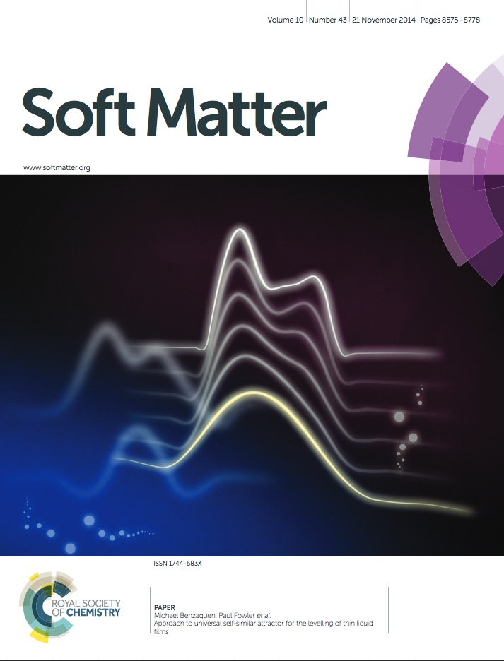
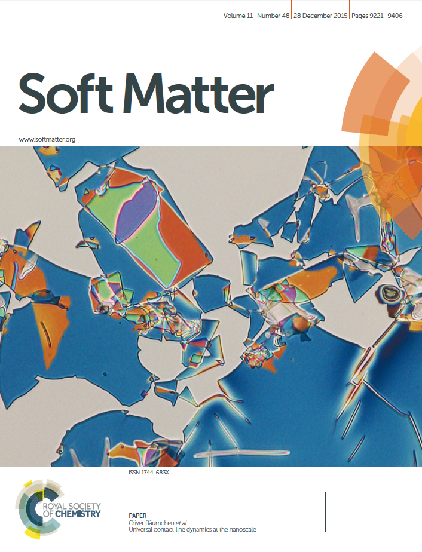
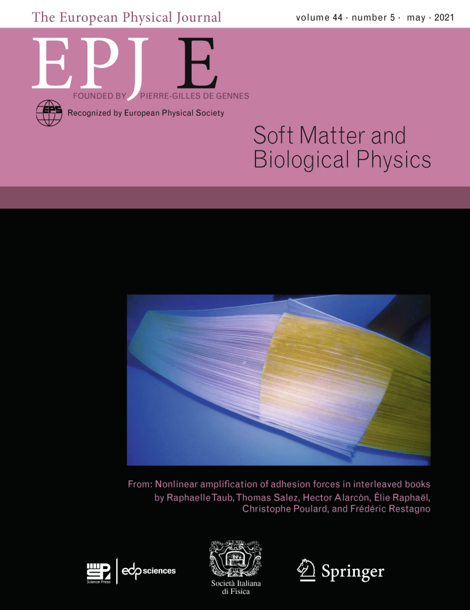

Elie RAPHAEL
Director of Research at CNRS
Gulliver Laboratory
Adjunct Professor of Mathematics
ESPCI, Paris
elie.raphael(AT)espci.psl.eu
Elie RAPHAEL
Director of Research at CNRS
Gulliver Laboratory
Adjunct Professor of Mathematics
ESPCI, Paris
elie.raphael(AT)espci.psl.eu
I work at UMR Gulliver 7083, a laboratory located at the City of Paris Industrial Physics and Chemistry Higher Educational Institution ESPCI.
My research focuses on the physics of soft matter and interfaces. In particular, I am interested in the behavior of polymers at interfaces, elastocapillarity phenomena, the propagation of capillary gravity waves, and the dynamics of granular materials.
I am a Fellow of the American Physical Society (2015).
For my teaching activities at ESPCI, see here.




Cohesion tunes the angle of repose in granular piles of frictionless droplets
Y. Heshmatzadeh, E. Raphael, K. Dalnoki-Veress
Submitted (2026)
Wave resistance for stochastic motion at interfaces
M. Arutkin, S. Reuveni, E. Raphael
Submitted (2026)
Capillary–gravity-wave resistance of a translating, pulsating line source
H. Diamant, E. Raphael
Journal of Fluid Mechanics Rapids, 1045 (2026) R1 PDF
Spreading and absorption of silicone oil droplets on silicone elastomer films
L. Dutcher, B. Baylis, J. R. Dutcher, E. Raphael, K. Dalnoki-Veress
European Physical Journal E, 49 (2026) 25 PDF
Stationary and transient correlations in driven electrolytes
H. Bonneau, V. Démery, E. Raphael
Journal of Statistical Mechanics: Theory and Experiment, (2025) 033201 PDF
Swelling and evaporation determine surface morphology of grafted hydrogel thin films
C. Kopecz-Muller, C. Gaunand, Y. Tran, M. Labousse, E. Raphael, T. Salez, F. Box, J. D. McGraw
Langmuir, 41 (2025) 2400-2410 PDF
Studies on V-formation and echelon flight utilizing flapping-wing drones
J. Martinez-Ponce, B. Herkenhoff, A. Aboelezz, C. Urban, S. Armanini, E. Raphael, M. Hassanalian
Drones, 8 (2024) 395 PDF
Directed droplet motion along thin fibers
H. Khattak, A. Shanzeelaa, E. Raphael, K. Dalnoki-Veress
PNAS Nexus, 3 (2024) pgae086 PDF
Temporal response of the conductivity of electrolytes
H. Bonneau, V. Démery, E. Raphael
Journal of Statistical Mechanics: Theory and Experiment, (2023) 073205 PDF
On the bridge hypothesis in the glass transition of freestanding polymer films
H. Bonneau, M. Arutkin, R. Chen, J. A. Forrest, E. Raphael, T. Salez
European Physical Journal E, 46 (2023) 8 PDF
Mechanical response of a thick poroelastic gel in contactless colloidal-probe rheology
C. Kopecz-Muller, V. Bertin, E. Raphael, J. D. McGraw, T. Salez
Proceedings of the Royal Society A, 479 (2023) 20220832 PDF
Microscopic foundation of the mu(I) rheology for dense granular flows on inclined planes
D. Dumont, H. Bonneau, T. Salez, E. Raphael, P. Damman
Physical Review Research, 5 (2023) 013089 PDF
Nanoparticle Taylor dispersion near charged surfaces with an open boundary
A. Vilquin, V. Bertin, E. Raphael, D. S. Dean, T. Salez, J. D. McGraw
Physical Review Letters, 130 (2023) 038201 PDF
Enhanced dip coating on a soft substrate
V. Bertin, J. H. Snoeijer, E. Raphael, T. Salez
Physical Review Fluids, 7 (2022) L102002 PDF
Contactless rheology of soft gels over a broad frequency range
Z. Zhang, M. Arshad, V. Bertin, S. Almohamad, E. Raphael, T. Salez, A. Maali
Physical Review Applied, 17 (2022) 064045 PDF
Soft-lubrication interactions between a rigid sphere and an elastic wall
V. Bertin, Y. Amarouchene, E. Raphael, T. Salez
Journal of Fluid Mechanics, 933 (2022) A23 PDF
Effect of the density of pillar-patterned substrates on contact mechanics:
Transition from top to mixed contact with a detailed pressure-field description
R. Ledesma-Alonso, E. Raphael, F. Restagno, C. Poulard
Physical Review E, 104 (2021) 055007 PDF
Unsteady wave drag on a disturbance moving along an arbitrary trajectory
L. Gierczak-Galle, A. Fadle, M. Arutkin, E. Raphael, M. Benzaquen
Submitted, http://arxiv.org/abs/2005.00857
Contactless rheology of finite-size air-water interfaces
V. Bertin, Z. Zhang, R. Boisgard, C. Grauby-Heywang, E. Raphael, T. Salez, A. Maali
Physical Review Research, 3 (2021) L032007 PDF
Time dependence of advection-diffusion coupling for nanoparticle ensembles
A. Vilquin, V. Bertin, P. Soulard, G. Guyard, E. Raphael, F. Restagno, T. Salez, J. D. McGraw
Physical Review Fluids, 6 (2021) 064201 PDF
Droplet migration on conical fibers
C. Fournier, C. Lee, R. Schulman, E. Raphael, K. Dalnoki-Veress
European Physical Journal E, 44 (2021) 12 PDF
Nonlinear amplification of adhesion forces in interleaved books
R. Taub, T. Salez, H. Alarcon, E. Raphael, C. Poulard, F. Restagno
European Physical Journal E, 44 (2021) 71 PDF
Mechanical properties of 2D aggregates of oil droplets as model mono-crystals
J.-C. Ono-dit-Biot, P. Soulard, S. Barkley, E. R. Weeks, T. Salez, E. Raphael, K. Dalnoki-Veress
Soft Matter, 17 (2021) 1194 PDF
Capillary levelling of immiscible bilayer Films
V. Bertin, C. Lee, T. Salez, E. Raphael, K. Dalnoki-Veress
Journal of Fluid Mechanics, 911 (2021) A13 PDF
Microscopic picture of erosion and sedimentation processes in dense granular flows
P. Soulard, D. Dumont, T. Salez, E. Raphael, P. Damman
Physical Review Letters, 125 (2020) 208002 PDF
Stretching a solid modifies its wettability… Or does it?
T. Salez, R. Schulman, M. Trejo, E. Raphael, K. Dalnoki-Veress
ChemViews, June 2020 DOI: 10.1002/chemv.202000046
Symmetrization of thin free-standing liquid films via capillary-driven flow
V. Bertin, J. F. Niven, H. A. Stone, T. Salez, E. Raphael, K. Dalnoki-Veress
Physical Review Letters, 124 (2020) 184502 PDF
Rearrangement of 2D aggregates of droplets under compression: signatures of the energy landscape from crystal to glass
J.-C. Ono-dit-Biot, P. Soulard, S. Barkley, E. R. Weeks, T. Salez, E. Raphael, K. Dalnoki-Veress
Physical Review Research, 2 (2020) 023070 PDF
Cooperative strings and glassy dynamics in various confined geometries
M. Arutkin, E. Raphael, J. A. Forrest, T. Salez
Physical Review E, 101 (2020) 032122 PDF
Direct measurement of the elastohydrodynamic lift force at the nanoscale
Z. Zhang, V. Bertin, M. Arshad, E. Raphael, T. Salez, A. Maali
Physical Review Letters, 124 (2020) 054502 PDF, supplementary information: SI
See here